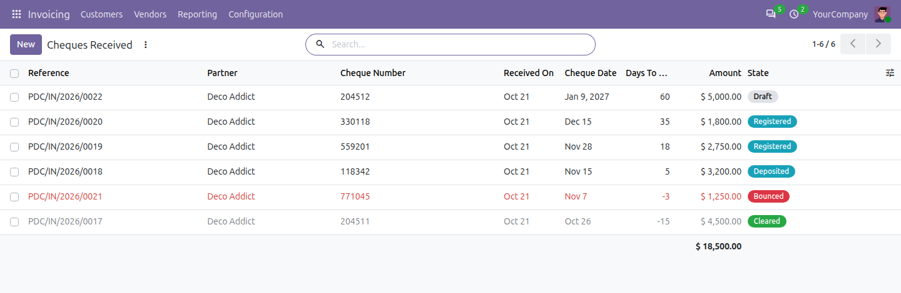
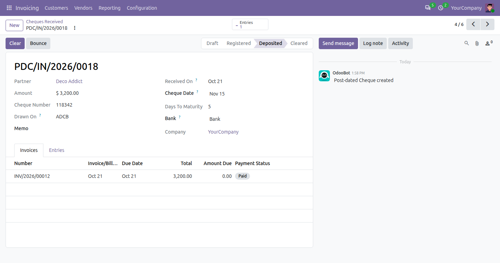
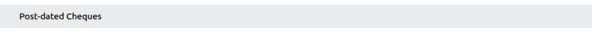

100% FreeOpen source · LGPL-3Odoo 20 Community & Enterprise
Post-dated Cheques
Keep track of the cheques received from customers and issued to vendors until their date: settle the invoices at once, deposit the cheques, clear them into the bank on their date, and handle the ones that bounce.

The cheques received: registered, deposited, cleared and bounced, with the days left to their date.
What it doesEvery step of a cheque, with its entry
The cheques wait on a PDC account until they are cleared, so the bank shows only the money that is really there.
✎
Register
The amount moves from the customer to the PDC Receivable account (or from PDC Payable to the vendor), and the invoices or bills it pays are settled.🏦
Deposit
Mark the cheques taken to the bank, to see what is waiting to be cleared.✔
Clear
On or after the cheque date, the amount moves from the PDC account to the bank. Before its date, clearing is refused.↩
Bounce
The registration is reversed and the invoices are open again, with a note on the cheque.⏱
Reminders
A daily activity on the cheques reaching their date, for whoever has to cash or pay them.☰
Register of cheques
Received and issued, with filters To Clear, Due and Bounced, grouped by status, partner or month.
The chequeOne form, from registration to clearing
The invoices it pays, the bank it clears into, its date and the days left, and the entries it made.

A deposited cheque: its invoice is paid, and it clears into the bank on its date.
How to use itThree steps
1. In Accounting > Configuration > Settings, set the PDC Receivable and PDC Payable accounts (with reconciliation allowed) and the journal of the registrations.
2. In Customers > Post-dated Cheques (or Vendors), create the cheque with its partner, amount, number, date and the invoices it pays, and Register it.
3. Deposit it, then Clear it on its date; if it bounces, click Bounce and the invoices are due again.

The settings: the PDC accounts and the journal.
Good to knowThe details that matter
✓ A cheque can pay several invoices, or part of one: the rest stays due.
✓ A received cheque only pays customer invoices, an issued one only vendor bills.
✓ A registered cheque cannot be deleted; it is cleared, or it bounces.
✓ It only depends on the Invoicing app: it works on Odoo 20 Community and Enterprise alike, with or without the other accounting modules.

Keeping it simple